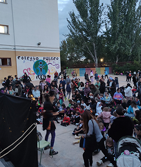
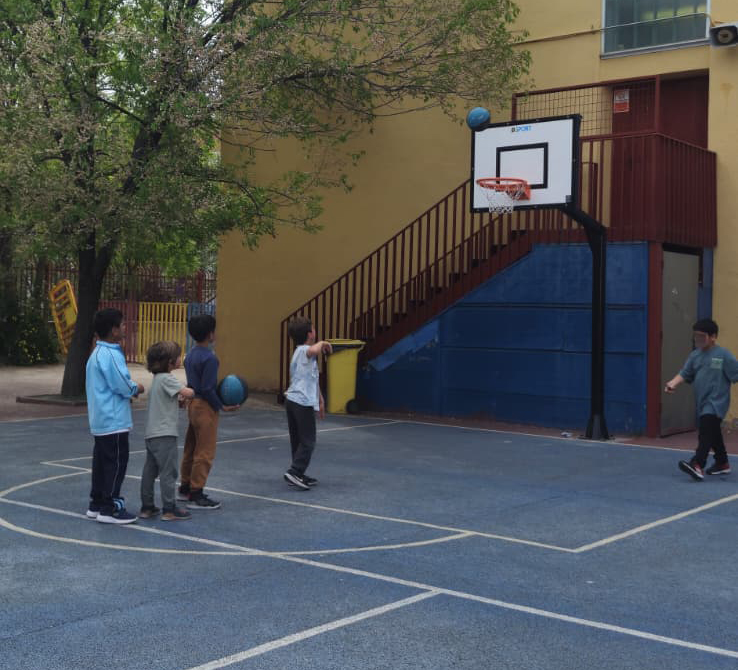
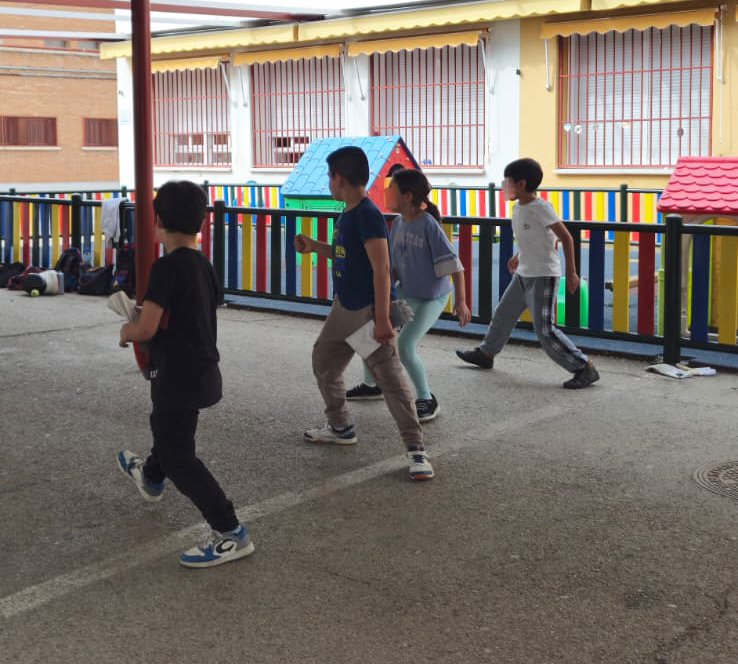
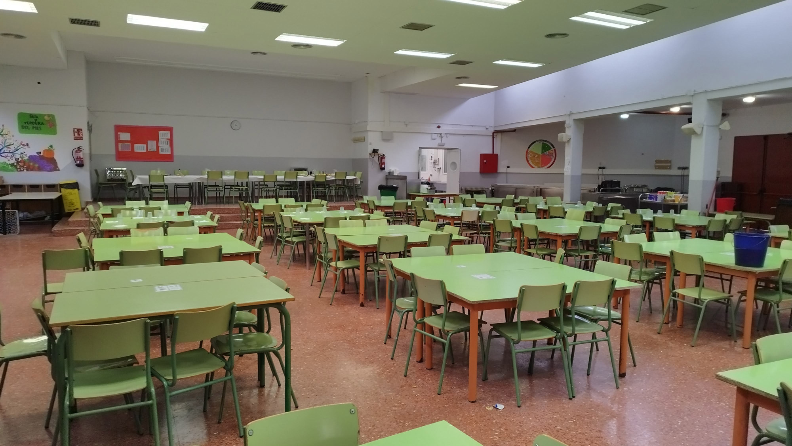
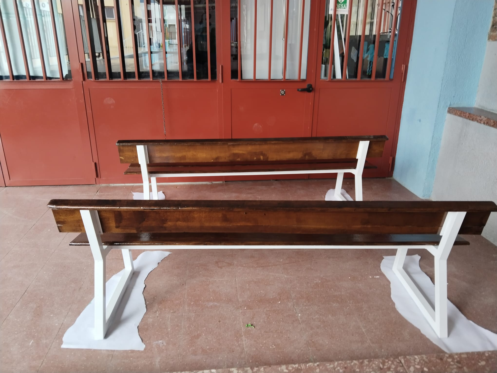
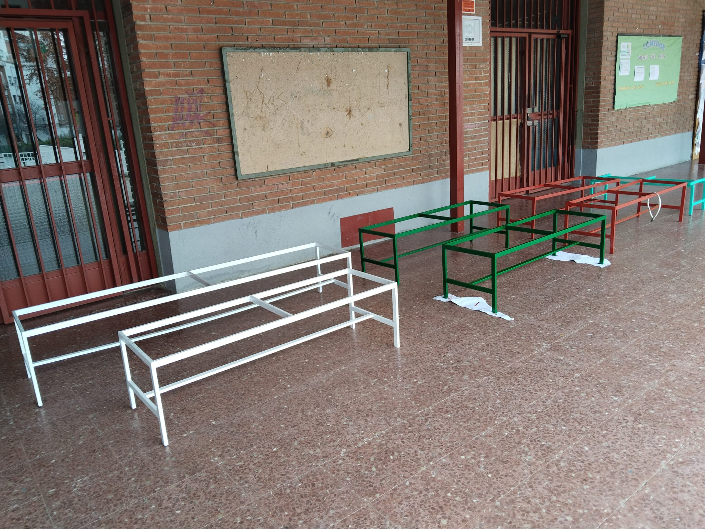
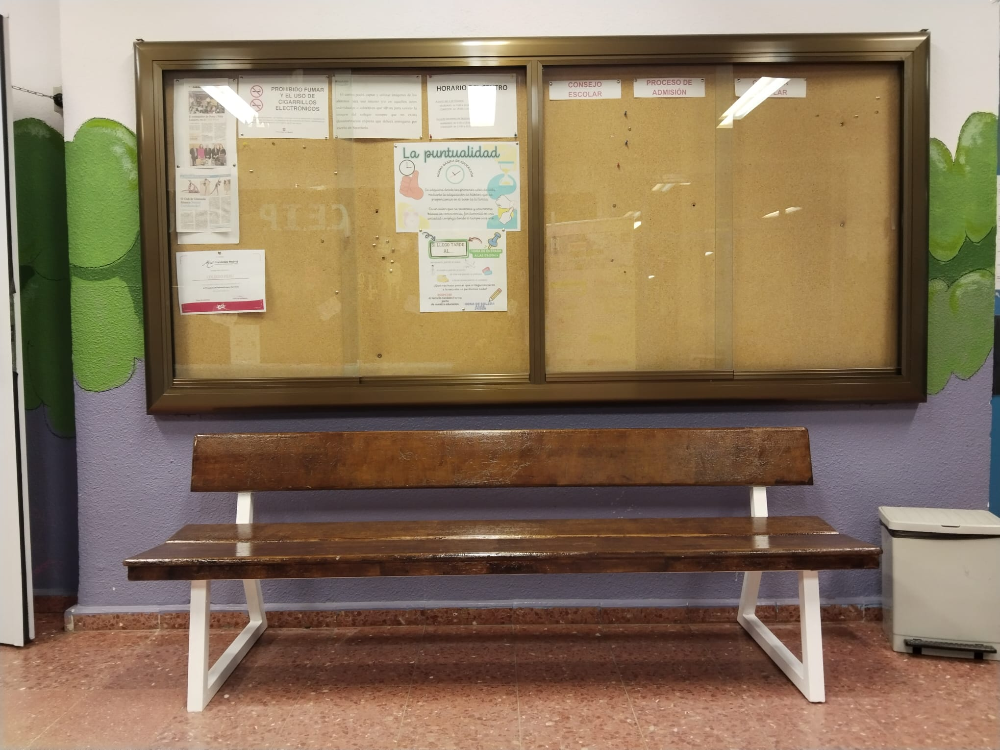
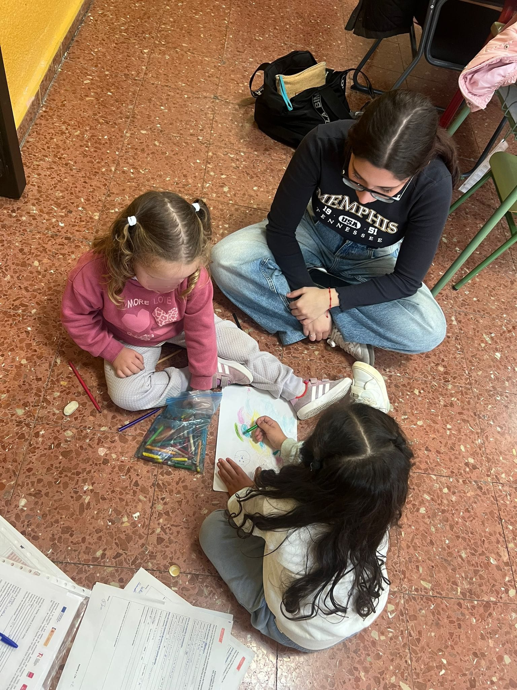
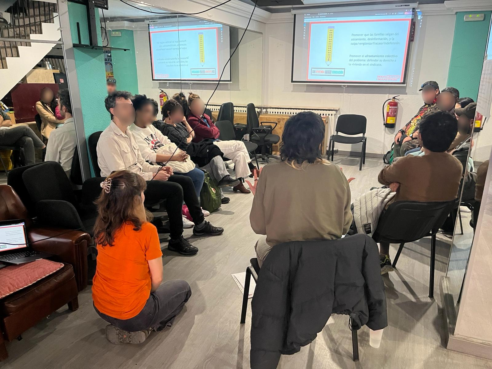
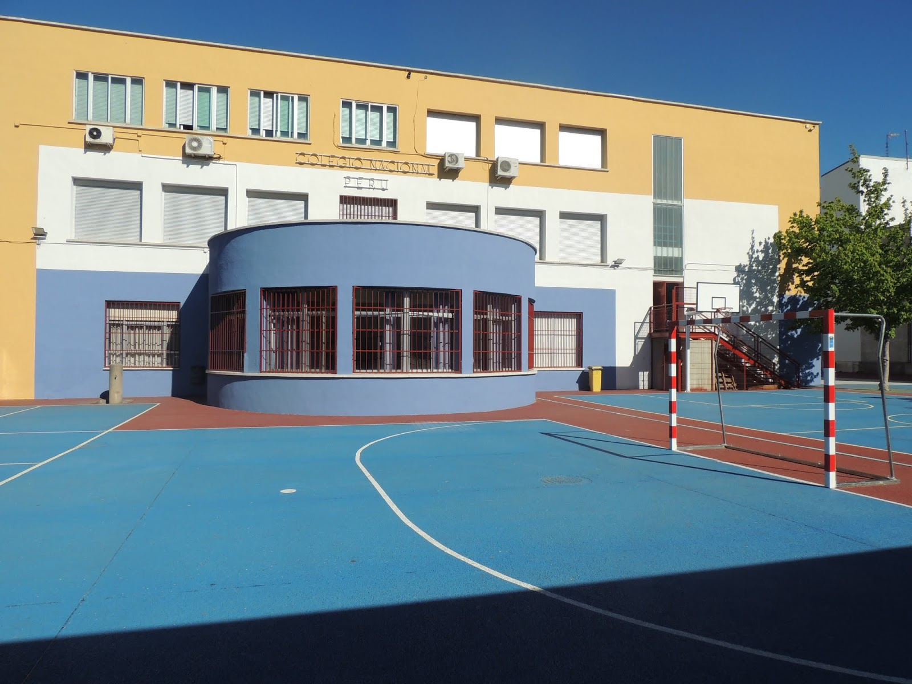

Comisiones de Trabajo
Nuestros grupos de trabajo sobre los temas que consideramos más relevantes
Comisión
Primer Ciclo 0-3 años
Atención y apoyo específico para las familias con niños y niñas en la etapa de educación infantil de 0 a 3 años. Esta comisión trabaja para dar voz a las necesidades de las familias con los más pequeños, facilitando su integración en la comunidad educativa y velando por la calidad de la atención en esta etapa tan importante.



Comisión
Educación
Busca la mejora educativa, actuando como enlace entre familias y colegio, proponiendo actuaciones relacionadas con el nivel académico y la participación de las familias. Esta comisión se encarga de canalizar las inquietudes educativas, proponer mejoras pedagógicas y fomentar una comunicación fluida entre el equipo docente y las familias del centro.
Comisión
Extraescolares
Organización de actividades fuera del horario escolar: excursiones, visitas y actividades complementarias. Esta comisión se encarga de coordinar y gestionar toda la oferta de actividades extraescolares, buscando opciones variadas que respondan a los intereses de las familias y contribuyan al desarrollo integral de los niños y niñas.



Comisión
Comedor
Colabora en el servicio de comedor escolar, seguimiento de menús, gestión de incidencias y mejora continua del servicio. Esta comisión vela por la calidad nutricional de los menús, atiende las necesidades especiales de alimentación y trabaja en coordinación con el servicio de catering para garantizar una experiencia positiva en el comedor.
Comisión
Comunicación
Comunicación entre la AFA y las familias a través de la AFA y redes sociales. Esta comisión gestiona los canales de información para mantener a todas las familias al día de las novedades, actividades y decisiones de la AFA, asegurando una comunicación clara, accesible y oportuna.




Comisión
Manos a la Obra
Mantenimiento del colegio, pequeñas reparaciones, jardinería, mejoras y embellecimiento de las instalaciones. Esta comisión organiza jornadas de trabajo colectivo donde las familias colaboran para mantener y mejorar los espacios del colegio, creando un entorno más agradable para todos.
Comisión
Convivencia
Apoyo a la resolución de conflictos, fomento de la buena convivencia y creación de un ambiente escolar positivo. Esta comisión trabaja para promover valores de respeto, tolerancia e inclusión, colaborando con el centro en la mediación y prevención de conflictos entre la comunidad educativa.



Comisión
Festejos
Organización de fiestas y celebraciones: Navidad, Fin de curso y otros eventos especiales. Esta comisión se encarga de planificar y coordinar las celebraciones del colegio, creando momentos de encuentro y diversión para toda la comunidad educativa.
Comisión
Vivienda
El Punto de Vivienda es un espacio mensual de encuentro abierto a familias del colegio y cualquier persona interesada, donde ofrecemos escucha, orientación y herramientas útiles sobre cuestiones de vivienda. Nuestro objetivo es acompañar, reducir el aislamiento y conectar con recursos como los del Sindicato de Inquilinas e Inquilinos de Madrid. Consultas: viviendaafaperu@gmail.com


Comisión
Discapacidad / Diversidad Funcional
Realizamos talleres, charlas-coloquio, y tenemos un grupo de WhatsApp donde compartimos información relevante. Abrimos algunos temas a debate, y sobre todo buscamos el aprendizaje para todos ya sea que tengamos o no familiares con discapacidad. La inclusión empieza por entender que Tod@s sumamos, CON o SIN discapacidad.
Actividades para Disfrutar en Familia
Además de las comisiones, organizamos actividades abiertas a todas las familias
Club Montaña
Cada trimestre salimos a la montaña en una ruta adaptada para toda la familia. Respiramos aire limpio, estiramos las piernas y compartimos bocadillos.
Huerto
Una vez a la semana nos juntamos en familia para plantar, regar y cultivar lo que haga falta en nuestro huerto.
Bicicletadas
Salidas en bicicleta para disfrutar del aire libre, hacer ejercicio y fortalecer los lazos entre las familias de nuestra comunidad.